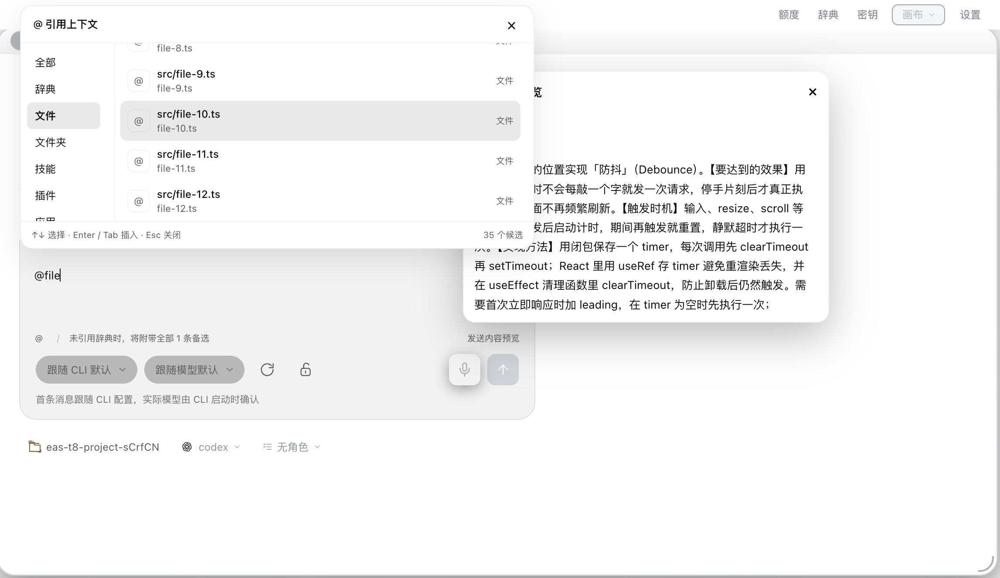
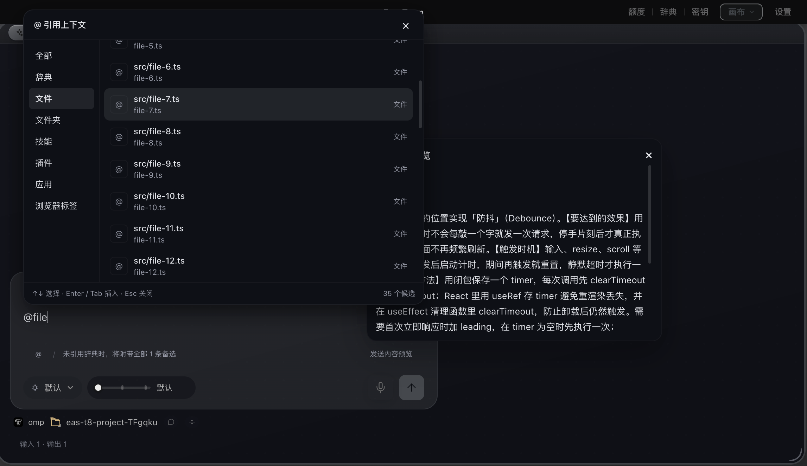

EAS-TERM · REVIEW 02 · 2026-09-07
@ 引用与斜杠命令
三端共享输入框已落地
辞典成为一级候选，预载词条保留在输入框，选择后原位展开。启动页与对话页使用同一套分类、搜索和键盘交互。
2534全量测试通过 · 1 跳过
120三端界面检查通过
26故障专项检查通过
严格回归的重点
输入法确认、光标后缀、键盘选项滚动、发送失败恢复、来源失败重试、自建辞典身份、窄窗口操作区，以及 Esc 与画布最大化的边界。
原有模型/强度、审批、通知和对话集成回归通过。生产构建通过。

Codex · 启动 · 浅色 · 640px
omp · 对话 · 深色 · 640px验证范围与功能边界
截图来自真实 Electron/React。发送、CLI 启动和故障由隔离夹具模拟，未进行真实模型推理。插件名称引用不会连接服务，浏览器分类目前只读取 Eas-Term 已打开网页。
候选复用已有只读 API；会话传输、权限和持久化保持原边界。原生斜杠仅显示 adapter 声明项。
完整验证说明 · 三端检查原始结果 · 故障专项原始结果